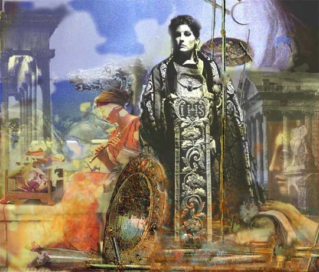
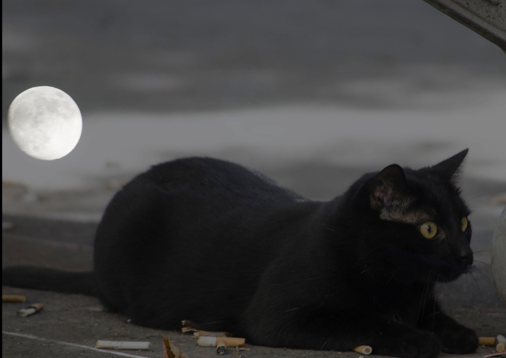
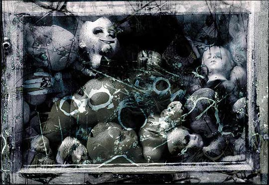

IMAGES OF THE DAY 92
01/01/2024 - 01/10/2024
01/01/2024
Photo-Based
Processed Photography
Paper Leaf
by Conrad Aiken
Click image to access artist's full exhibit

01/02/2024
Photo-Based
via Digital Camera
It'll Never Fly Again
by Alexander
Click image to access artist's full exhibit

01/03/2024
Photo-Based
Creative Photography
Quaternity
by H. Gay Allen
Click image to access artist's full exhibit

01/04/2024
Photo-Based
Micronirico
Coffee Break
by Claudio Allia
Click image to access artist's full exhibit

01/05/2024
Photo-Based
Black-and-White Fine Art Photography
Poles: Southern Salton Sea, Southern CA
by Jeff T. Alu
Click image to access artist's full exhibit


01/06/2024
Photo-Based
Omnimedial
The Emancipation of Jeanne d' Arc
by Apostolos
Click image to accs/aess artist's full exhibit

01/07/2024
Photo-Based
Digital Photography
19-1
by Jale Arditti
Click image to access artist's full exhibit
01/08/2024
Photo-Based
Humanized Photography
Hypostasis
by Giovanni Auriemma
Click image to access artist's full exhibit

01/09/2024
Photo-Based
Apocryphal Art
Torture by Nature
by Teodoru Badiu
Click image to access artist's full exhibit


01/10/2024
Photo-Based
Contamination among the Arts
Day Nursery
by Alessandro Bavari
Click image to access artist's full exhibit